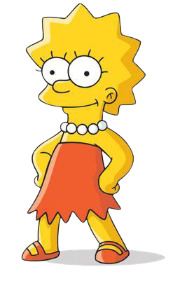

Lisa Marie Simpson é uma personagem fictícia da série animada Os Simpsons. Ela é a criança do meio e mais talentosa da família Simpson. Lisa nasceu como uma personagem em The Tracey Ullman Show curta "Good Night" em 19 de abril de 1987. O cartunista Matt Groening criou e a projetou enquanto esperava para conhecer James L. Brooks. Groening havia sido convidado para lançar uma série de curtas baseados em sua história em quadrinhos Life in Hell, mas em vez disso decidiu criar um novo conjunto de personagens.
Muito diferente da seu irmão Bart Simpson, na escola, Lisa sempre tira notas altíssimas (também sendo ótima tocando seu saxofone, mesmo sendo constantemente menosprezada) Lisa é a mais esperta de seus irmãos, sendo retratada até como presidente dos EUA em alguns episódios.
Inteligente, gentil e apaixonada pelo planeta e por todos os seres vivos, Lisa Simpson, aos oito anos de idade, é a segunda filha de Homer e Marge, a irmã mais nova de Bart, e irmã mais velha de Maggie. O alto intelecto de Lisa e a postura política de esquerda criam uma barreira entre ela e outras crianças de sua idade; portanto, ela é um pouco de um pária solitário e social. Lisa é vegetariana, forte ambientalista, feminista e budista.